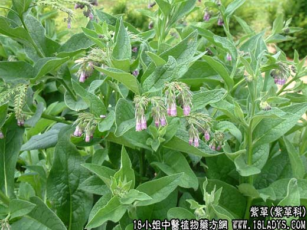

【中药大全】
紫草为紫草科草本植物紫草或新疆假紫草的根。甘、寒。归心、肝经。
1．凉血退疹：用于温病热入营血，温病邪热迫血妄行，麻疹，因血热毒盛而斑疹透发不畅等，如（紫草如圣汤）（<证治准绳>紫草快斑汤）（<中医儿科学>紫草三豆饮）。
2．清热解毒：用于疮疡溃破、湿疹阴痒、水火烫伤等，如（生肌玉红膏、紫草润肌膏）、（<张氏医通>紫草消毒饮）。
【药效鉴别】
紫草为心、肝两经血分药，长于凉血活血，凉血解毒透疹，并能滑肠。
【药理作用】
本品煎剂对心脏有兴奋作用；对绒毛膜上皮癌及恶性葡萄胎有一定疗效；并有降低生育率、解热等作用。
【化学成分】
含色素成份，有紫草素、乙酰紫草素、三乙酰紫草素、二苯甲酰紫草素、紫草烷、紫草红、异丁基紫草素、脱氧紫草素等。
【用量用法】
6——20g，水煎服，或入剂。外用适量。
【使用注意】
若疹出顺畅不可妄投。
本文解释权归中药大全，本文地址： https://www.daquan.com/post/1845.html